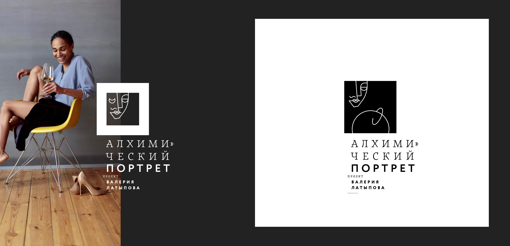
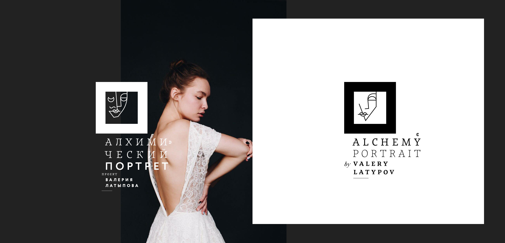
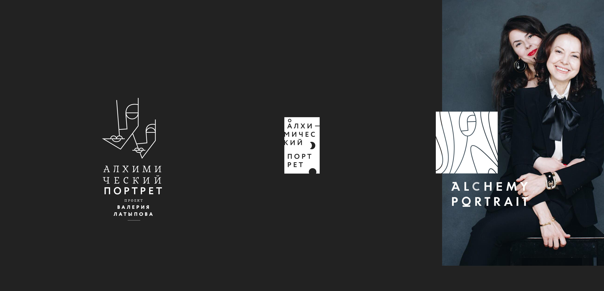

«I create a unique atmosphere. My hero and I catch the moment when our inner honesty gives birth to perfect beauty» - this is how Valery describes his project. Agree, for such a task, it is not easy to immediately choose an image. It should be quite subtle and at the same time about the game — after all, the most beautiful thing is the game.
We met in Bali a few years ago and I had a chance to observe how Valera works — he instantly creates a relaxed and cozy atmosphere. It is not for nothing that many artists like to work with him so much. So, what did I suggest in the beginning?

I came up with an unusual idea — what if we make two versions of the logo — male and female:

Surprisingly, in the end, after going through a series of design transformations, we decided on one of the first options. The version is obviously bold and very lively, which exactly emphasizes the style of Valery's works.
The sign refers to works of pictorial art, intrigues and plays with the viewer. I am extremely happy that I was able to implement this project!
